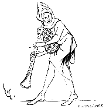

Eugène VIOLLET le DUC
Dictionnaire raisonné du mobilier.CHEVRETTE, s. f. (chieuvrete, chaplecho). Instrument à vent composé d'une peau de chevreau et d'un chalumeau. Guillaume de Machaut, trouvère du XIVe siècle, distingue cependant la chevrette de la cornemuse :
« Cornemuses, flajos et chevrettes. »
 Figure 1 Peut-être la chevrette était-elle d'un plus petit volume que la cornemuse. Quelques vignettes de manuscrits donnent, en effet, de petites cornemuses garnies seulement d'une pipe pour souffler, et d'un seul chalumeau très long, percé d'un assez grand nombre de trous (fig. 1)1 (voy. CORNEMUSE). La musette dont on se servait, il y a peu d'années, dans la Bourgogne et le Limousin, pourrait bien n'être autre que la chevrette du moyen âge. On lui donnait aussi les noms de bedon et de loure.
Note :
(1) Hist. du saint Graal, Biblioth. impér. (fin du XIIIe siècle).